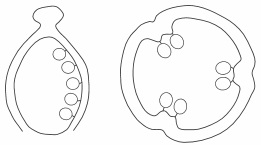

New Senior School Biology Practical Activity & Work Book Two
Chapter
10
REPRODUCTION IN PLANTS
Notable Concepts
Sexual Reproduction in plants
Flower structures and functions
Ovary positioning orarrangement
Placentation
fig9.8:
Plants can carry out both sexual and asexual reproductions.
Sexual Reproduction in Plants
In plants sexual reproduction occurs only in flowering plants.Since plants cannot move to actualize the fussion of gamates from the opposite sexes of organisms of the same species (fertilization), as required in sexual reproduction, reproductive structures called flowers are in place not only to contain reproductive organs but to also enhance the process that leads to fertilization.
Flowers (Structures and their functions)A flower can basically be described as a modified leaf borne on a shortened stem or stalk of the plant. A flower consists of four whorls which are referred to as its floral parts this include:
The sepal; Petal, Stamen and carpel arranged in concentric rings one above each other, on a base called receptacle or thalamus
The Sepals: They are collectively called calyx. The Sepals are usually green in colour. They protect the inner essential parts of the flower during bud stage
The Petals: Together, the petals are called corolla. Going by order, from outer to inner part of the flower, the petals are second whorl just after the sepals. They are the colourful and scented part of the flower which enhances insect and animal pollination. They also protect the inner essential reproductive parts.
Stamens: This is the male reproductive organ or part of a flower, which is in groups, collectively called Androecium. Most stamens of flowers consist of filament – a long thin stalk and anther which is the swollen end of the thin stalk. The filament bears the anther which contain the pollen grains. The male gamete is found in the pollen grain.
A Section of the floral parts of a flower
Carpels: The carpels are located centrally. They are the female reproductive part or organ of the flower collectively carpels are called gynoecium.
A flower can be said to be
Monocarpous – just one carpel
Apocarpous – Two or more separate carpels. Or
Syncarpous – Two or more carpel fused to be a single structure.
When a carpel that is existing as a single structure either singly separated or severally fused as one, it is called a pistil.
Most pistil have the following features
Ovary, which contain the ovules where the female gamate or egg cell is found
Slander structure(s) arising from the top of the ovary called style
Stigma(s) which is the tip of the style.
The ovary which develops into a fruit after fertilization protects the egg cells within ovule and the embryo
The ovule develops into a seed which contain the embryo.
The style bears the stigma which is the surface that receive pollen grain.
A Section of flower structure showing the male reproductive part
A Section of flower structure showing the male reproductive partfig10.4:
Types of flowers based on ovary positioning.
1. Hypogynous flower e.g Hibiscus flower
flower parts arising from the receptacle at the same level as the ovary or below it. The ovary is called Superior ovary
2. Perigynous flower example: rose flower
Here the receptacle appears cup shaper and floral parts seem to be above the central ovary. The ovary is called half inferior ovary
3. Epigynous flower example: guava
All the other floral parts are above the ovary which is completely enclosed in a fleshly receptacle. The ovary is called inferior ovary
Positioning
fig10.5A: A
fig10.5B: B
fig10.5: C
Placentation
The arrangement of ovules in the ovary of a flower is called placentation
fig10.6 A - G:
A axial, e.g., Tomato (ovules are attached to the central column connected to ovulary walls by partitions)
B free-central, e.g. water leaf (ovules attached to a central column not connected to the rest of the ovulary)
C parietal, e.g. pawpawhypogynousperigynousepigynous(ovules are connected to the inner surface of the outer wall)

D marginal, e.g. Pride of Berbados (ovules lined up in a row on one side of the ovulary)
E e.g. sun flower (ovule(s) attached to the base of the ovulary)
F apical (ovule(s) attached to the apex of the ovulary)
G superficial, e.g. water lily
General Questions On Reproductive System in Plants
1. Flowering plants which are also called
, apart from having flowers, they produce seeds that develop within fruits.
2. Diagram of a flower . Label the parts labeled A B C D and F in the flower diagram in fig10.7
fig10.7
3. Is the flower a perfect flower or an imperfect flower?
4. The pistil can constitute the innermost structure of a flower. It is the
5. Filament and anthers make up the male reproductive part of a flower called
6. A single ovary, style and stigma make up a
7. One example of an imperfect flower is
maize
hibiscus
pride of the barbados
8. Among flowering plants, it is in
that petals, sepals and stamens occur in multiples of 3 while in
they occur in multiples of 4 or 5.
9. All the sepals of a flower together form the
10. A flower with one carpel is said to be monocarpous while the ones with two or more separate carpels are called
11. The ovary is part of the carpel, it contains one or more ovoid structure called
12. After fertilization in flowering plants, the ovary develop into a fruit, while the ovules develop into
13. Male gametes are found in the pollen grain while female gametes are located within the
14. A pollen grain contains haploid tube nucleus and a haploid
nucleus which gives rise to two male gametes.
15. Arrangement of ovules in the ovary is called
fig10.8:
20. Parietal placentation can be found in pawpaw while
placentation is found in tomato
21. Bisexual flowers are
flowers that are unisexual
flower that have more than one sepal
flowers that have both carpel and stamens
22. In certain plants, flowers are either male or female. Such flowers are called
flowers.
23. When male and female flowers are found on the same plant, the plant is known to be a monoecious plant but when they are found in different plants, the plant is said to be
The diagram below is a pistil cut in half. Identify and label the:
fig10.9
24.
25.
26.
.
EXPRESSION EXERCISE
1. (a) Write down two non essential floral parts of a flower
(b) Write down one function that each can perform in a flowering plant
(c) Why are the structures you stated regarded as non essential floral parts of a flower
2. write down or explain what you understand by the following:
(a) Polysepalous
(b) Gamosepalous
(c) Polypetalous
(d) Gamopetalous
3. ( a) Explain with example, what you understand by incomplete or imperfect flowers
(b) Explain with examples, the difference between: (i) Monocarpous (ii) Apocarpous and (iii) Syncarpous pistils
PRACTICALACTIVITIES
fig10.91 A
B
1. Study the diagram in fig 10.91 carefully
a) Identify which of them that shows the male reproductive structure and the one that shows the female reproductive structure.
b) Label the parts indicated or shown with leading lines
2. Diagram below in fig 10.92 A - E shows placentation in flowering plants, write down the type of placentation for the following plants in the table and indicate the diagram that shows that type of placentation
Plant
Type of placentation
Diagram that shows type of placentation
orange
okra
tomato
pawpaw
tomato
pride of the berbados
fig 10.92 A - E
A
B
C
D
E
The following are specimens of different flowers: Caesalpinia pulcherrima, sunflower, maize flower, and pawpaw flowers
Specimen A
Specimen B
Specimen C
Specimen D
3. (a) Identify and label the ovary and petals in specimen B
(b) Identify the flower(s) that are bisexual and unisexual
(c) Which of the flowers would likely be wind pollinated
(d) Write down the specimen flowers that are insect pollinated
(e) Which of the flowers has its plant as a monoecious plant
(f) Which of the flowers has its plant as a dioecious plant